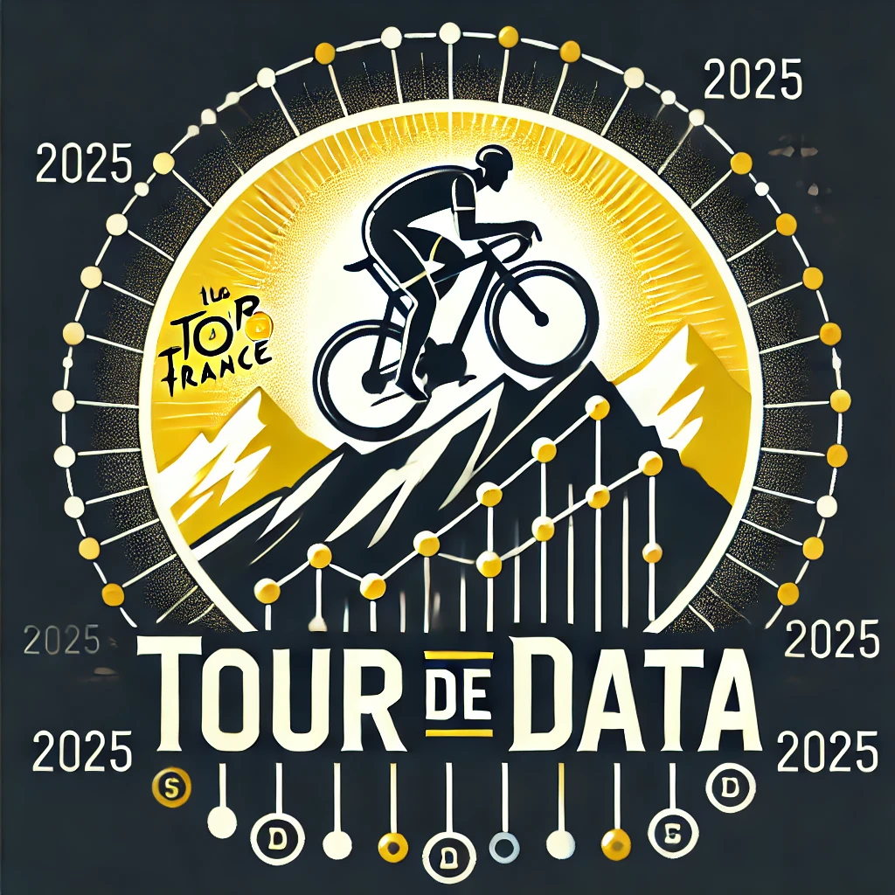

Tour de Data 2025
Cycling is a sport of endurance, strategy, and ever-evolving dynamics. But beyond the races, data tells a deeper story. Tour of Data 2025 is a data visualization project aimed at uncovering hidden trends in professional cycling using real-world statistics from ProCyclingStats.
By leveraging the Procyclingstats Python package, we explore key patterns such as the age distribution of winners, the rise and dominance of certain nationalities, and correlations between race performance and various factors. Through interactive and insightful visualizations, we aim to provide a clearer picture of the forces shaping modern cycling.
Join us as we turn raw numbers into compelling insights, bringing a new perspective to the world of pro cycling.